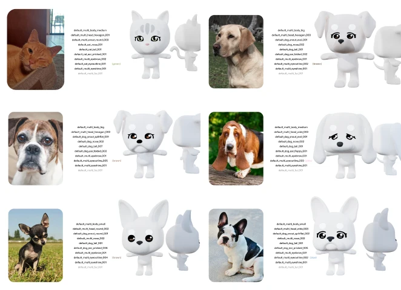
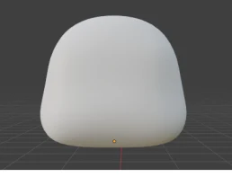
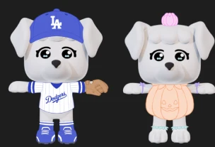

Abril · 2026
Orejas, hocicos y colas intercambiables
Una oreja caída tenía que encajar en la misma cabeza que una erguida. En abril se fijó dónde se une cada pieza al cuerpo para poder combinar rasgos de distintas razas.
Explorar las piezas ↓ Ver la prueba del mes ↓ Ver componentes actuales ↗
Abril · 2026
Avances por sistema
 Personaje modularIntercambiar orejas, hocicos, narices y colas
Personaje modularIntercambiar orejas, hocicos, narices y colas
Qué se hizo
Cada pieza recibió un punto de montaje en el cuerpo. Se prepararon geometrías, coordenadas de textura, huesos y pesos. En las orejas se exploraron puntas erguidas, caídas o dobladas, cortes, pendientes y una oreja ausente.
Cómo funciona
Al coincidir el origen de la pieza con su punto de montaje, se puede cambiar una oreja o una cola conservando la posición. Las orejas comparten los colores principal y secundario del cuerpo. El esqueleto de la cola permite doblarla después de montarla.

Cabeza y expresiónConservar el rostro al cambiar de raza
Qué se hizo
Se definieron combinaciones de deformaciones para la cabeza y zonas que debían quedar estables. Los estudios de razas difíciles explicitan qué rasgos conservar. También se probaron distintos iris y brillos.
Cómo funciona
Cambiar la mandíbula o las mejillas altera el contorno mientras los rasgos mantienen su lugar. El color del iris y la forma del reflejo añaden variaciones dentro de una misma familia de ojos.


Vestuario y comunicaciónDefinir qué tipos de ropa producir
Qué se hizo
Los conceptos comparan direcciones de vestuario y empiezan a clasificar las prendas por tipo. El recap también registra una prueba de comunicación visual para redes.
Cómo funciona
Sobre la misma mascota se puede comparar qué partes cubre cada propuesta y cómo cambia su silueta. Esa clasificación sirve de referencia para los conjuntos que después se modelarán.

Colección de abril
El catálogo de rasgos
Veintiséis pares de orejas
De las caídas a las erguidas, la unión se conserva y cambia la silueta. Compara los pares sobre la misma cabeza.
Explorar la forma de las colas
Prueba interactiva
Once siluetas, vistas de espaldas
Esta fila de Blender permite comparar cuánto sobresale cada cola y cómo cambia la silueta al levantar o doblar las orejas.